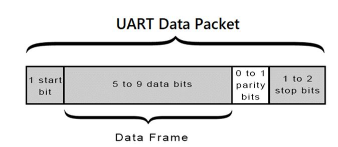
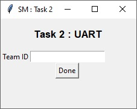
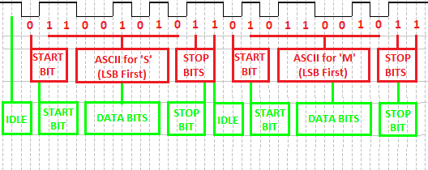

Task 2 B : Universal Asynchronous Receiver-Transmitter (UART)
1. Introduction
1.1 Universal Asynchronous Receiver-Transmitter Protocol
Universal Asynchronous Receiver-Transmitter (UART) is one of the simplest and oldest forms of device-to-device digital communication. UART is a serial communication protocol that performs parallel to serial data conversion at the transmitter side and serial to parallel data conversion at the receiver side.
UART transmitter and receiver works asynchronously, which means there is no clock signal to synchronize the output of bits from the transmitting UART to the sampling of bits by the receiving UART. Instead of a clock signal, the transmitting UART adds Start and Stop Bits to the Data Packet being transferred. These bits define the beginning and end of the Data Packet so the receiving UART knows when to start reading the bits. When the receiving UART detects a Start Bit, it starts to read the incoming bits at a specific frequency known as the baud rate.
1.2 Working of UART
One UART device consists of two parts : the first is Transmitter and the other is Receiver. It consists of two lines for data transmission, RX and TX, one in each direction as shown in the below figure.

1.2.1 Data Packet
The UART devices receive and transmit the data in serial manner. The communication takes place in a particular data format i.e the data is sent and received in a Data Packet. Each Data Packet consists of a Start Bit followed by Data Bits (usually 5 to 9-bits long) and then Parity Bit and at the end is the Stop Bit. The figure below shows the structure of the Data Packet used in UART communication.

- Start Bit
- Data Bits
- Parity Bit
- Stop Bit
When the transmitter is not sending any data the transmission line is held at a high voltage level that is at logic ’1’. To start the transfer of data the UART Transmitter pulls down the voltage to logic ’0’ for one clock cycle. When the UART Receiver detects this change from logic ’1’ to logic ’0’ it starts sampling the main Data Bits at a particular interval. This transition from high to low for one clock is indicated as the Start Bit period.
Once the Start Bit is detected the data that comes after it in the Data Packet is the actual data. Its length can be up to 5-bits to 9-bits long. In this task we will be using a 8-bit long data frame. In most cases, the data is sent with the least significant bit first.
Parity Bit is used to check if the data that comes to the UART Receiver of one device is the same as the data that is sent by the UART Transmitter of another device. Bits can be changed by electromagnetic radiation, mismatched baud rates, or long distance data transfers. Parity Bit is added after the Data Bits in the Data Packet. The Parity Bit can be 0 (even parity) or 1 (odd parity) depending upon the number of ’1’ in the data frame, if there are even numbers of 1 in the data frame then it is even parity or else it is odd. In this task, we will not use the Parity Bit in the data frame.
This bit marks the end of the Data Packet, as we know that the transmission line is pulled down from high to low to indicate the Start Bit, so at the end of the Data Packet we have to make the transmission line high again. The Stop Bit is always high.
1.2.2 Configuring the UART
Now that we have seen the structure of the Data Packet that is used for serial communication between two UART devices, let us now take a look at some important parameters that need to be considered while transmitting and receiving the data. These parameters must be the same for both the UART devices that are communicating with each other because there is no clock involved while the communication takes place (asynchronous communication). There are five parameters that we will take into consideration for defining the communication method.
- Baud Rate
- Number of Data Bits
- Parity Bit
- Stop Bit
- If your Team-ID is 2673 then your UART Transmitter should transmit "SM73".
- If your Team-ID is 0507 then your UART Transmitter should transmit "SM07".
- If your Team-ID is 6000 then your UART Transmitter should transmit "SM00".
- The clock input to UART transmitter module will be 50 MHz.
- Output of UART transmitter module will be tx signal which outputs "SMxx" serially.
- You can store "SMxx" string in a variable inside the UART transmitter verilog module.
Open sm_task2.exe file which is present in the downloaded folder. Enter your Team-ID and click "Done". Only enter the numeric part of the Team-ID i.e. if your Team-ID is SM#2673 then enter 2673 or if your Team-ID is SM#0100 then enter 0100. Task wont be evaluated if this step is not followed.
Now open uart.qpf. You will find uart.v file where module is defined. Do not make any changes to input and output ports. Firstly, without writing any logic, perform Analysis & Synthesis (Ctrl+K). Now, Run RTL Simulation. You will see some waveforms in ModelSim window, of these tx_exp signal is the expected output.
Now, implement UART transmitter module which outputs correct data on tx signal. You can create other verilog files in the project but uart.v should be the Top Level Entity.
- Above image shows transmission of "SM" only.
- Red part of the image shows the sequence of bits in correct order for transmitting "SM".
- Green part of the image can be used as a reference to design State Machine.
- We can see that the 2 Stop Bits are due to STOP BIT state followed by IDLE state.
- You are free to design a different state machine or complete the task without even implementing a state machine. It is recommended to design using state machine approach.
After completing, run RTL Simulation. Actual output should match desired output. The tx signal is actual output and tx_exp is the desired or expected output. You can also check ModelSim Transcript window for "No errors" or "Errors" message.
The Baud Rate will specify the speed of the data that is sent over the serial line between the transmitter and receiver. It’s usually expressed in units of bits per second (bps). This parameter can be used to calculate how long a single bit will last while transmitting. This value determines how long the transmitter holds a serial line high/low or at what period the receiving device samples its line. One of the more common baud rates are 9600, 38400, 57600, and 115200.
Assume that we select a baud rate of 115200 for transmitting and receiving the data, and the clock frequency used in UART transmitter and receiver is 50MHz. Then the duration of a single bit and number of clock cycles that will be passed during this period can be calculated as per the below formula.
Note : The clock used in UART Transmitter and Receiver is specifically for their internal operation and not for transmission between them.
Duration Of Bit = 1/BaudRate = 1/115200 ≈ 8680ns
Clocks Per Bit = Duration Of Bit/Time Period of Clock = 8680ns/20ns = 434
OR
Clocks Per Bit = Clock Period/BuadRate = 50M/115200 ≈ 434
Clock Per Bit represents the clock cycles that a single bit must remains on the serial line.
This parameter defines the number of data bits in the data packet between the Start and Stop bit. We will consider 8-bits of data in our data packet for this task.
The parity bit in the data frame of the UART communication tells the receiving device if there is any error in the Data Bits. The parity mode can be set for even parity or odd parity. In this task parity bit is not used.
The Stop Bits are at the end of the data frame and indicate the end of that frame for the receiver. There are many standards where we can use 0, 1 or 2 Stop Bit according to the distance or environment in which UART communication takes place. In this task we will use 2 Stop Bits in our Data Packet.
Final UART parameters for this task :
| Parameter | Value |
|---|---|
| Baud Rate | 115200 |
| No of Data Bits | 8-bits |
| Parity Bit | None |
| Stop Bit | 2-bits |
1.3 Serial Data Transmission & Reception
The below diagram shows the serial data that UART Transmitter transmits on the transmission line from the Start Bit to the Stop Bit. The diagram also shows the data received by the UART Receiver and also indicates the position of sampling of Data Bits from the data packet.

Now, we have learnt about the working of transmitter and receiver along with the parameters that need to be configured between them.
2. Problem Statement
In this task, you will be designing UART Transmitter. This UART Transmitter will have same parameters as described above.
| Parameter | Value |
|---|---|
| Baud Rate | 115200 |
| No of Data Bits | 8-bits |
| Parity Bit | None |
| Stop Bit | 2-bits |
The UART Transmitter should transmit "SMxx", where xx are last two digits of your Team-ID.
For Eg :
Important :
So, the UART transmitter module will have following input and output :
| Input | Output |
|---|---|
| clk_50M | tx |
Project File : Download TASK 2 B
Steps :

Refer below image to implement a State Machine which outputs correct data on tx signal.

Note :
The check signal indicates the positions were there is a mismatch between tx and tx_exp.

So, for correct output the check signal will always be low and "No errors" message is also displayed on ModelSim transcript.
Once the output is correct i.e. there are no check signal pulses, observe time_err signal. This signal indicates the timing error between tx and tx_exp.

Ideally, this signal should also be low always and this will happen only when the "Bit Duration" is 8680 ns (ideal value). So you must ensure that the width of the "time_err" pulses is as narrow as possible and ideally 0 i.e. no pulses. This becomes important if the design needs to be implemented on hardware.
…BestWishes!…